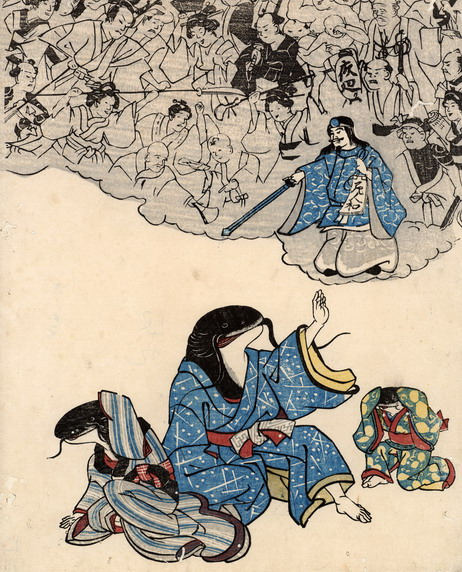

鯰の親子が、鹿島大明神に率いられた人間に襲われそうになり、おびえて座り込んでいる。父親の鯰は青い着物を、母親の鯰は縞模様の着物を、娘の鯰は黄色い瓢箪柄の入った青い着物を着ている。3体とも手足は人間のもので、父親鯰は人々を制止するように片手をあげ、母親鯰と娘鯰は袖で頭を覆い、おびえている。
出典：親書誌：U426_nichibunken_0175：（鯰の親子；ナマズノオヤコ）／日付：2010／資源識別子：U426_nichibunken_0175_0001_0000
Copyright (c)2010- International Research Center for Japanese Studies, Kyoto, Japan. All rights reserved.